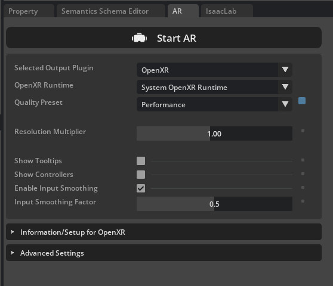

Running Isaac Lab with the CloudXR Runtime
Note: For this early access release, make sure you have a valid subscription to the NVIDIA CloudXR Early Access program on NVIDIA NGC.
Download CloudXR Runtime Container from NVIDIA NGC
- Follow NGC API Key doc to get your
NGC API Key (
nvapi-xxxx) for your NGC Organization.- The key should have granted permission to access
NGC Catalog - Save the key to a safe place as it will only appear once
- The key should have granted permission to access
- Setup credential for docker (use username
$oauthtokenas literal)docker login nvcr.io
Username: $oauthtoken
Password: <your-ngc-api-key> - Try to pull docker image and it should succeed
docker pull nvcr.io/nvidia/cloudxr-runtime-early-access:6.0.1-webrtc
🖥️ Option 1: Running Isaac Lab and CloudXR Runtime Containers Together
On your Isaac Lab workstation:
-
From the root of the Isaac Lab repository, update
./docker/.env.cloudxr-runtimeto the following version tag# NVIDIA CloudXR Runtime base image
CLOUDXR_RUNTIME_BASE_IMAGE_ARG=nvcr.io/nvidia/cloudxr-runtime-early-access
# NVIDIA CloudXR Runtime version to use
CLOUDXR_RUNTIME_VERSION_ARG=6.0.1-webrtc -
Also update
./docker/docker-compose.cloudxr-runtime.patch.yamlto use host network:services:
cloudxr-runtime:
image: ${CLOUDXR_RUNTIME_BASE_IMAGE_ARG}:${CLOUDXR_RUNTIME_VERSION_ARG}
network_mode: host
# No port mappings needed with host network
healthcheck:
...
... -
Start the Isaac Lab and CloudXR Runtime containers using the Isaac Lab container.py script
./docker/container.py start \
--files docker-compose.cloudxr-runtime.patch.yaml \
--env-file .env.cloudxr-runtimeIf prompted, elect to activate X11 forwarding, which is necessary to see the Isaac Lab UI.
Note: The
container.pyscript is a thin wrapper around Docker Compose. The additional--filesand--env-filearguments augment the base Docker Compose configuration to additionally run the CloudXR Runtime. For more details oncontainer.pyand running Isaac Lab with Docker Compose, see the Docker Guide. -
Enter the Isaac Lab base container with:
./docker/container.py enter baseFrom within the Isaac Lab base container, you can run Isaac Lab scripts that use XR.
-
Run an example teleop task with:
./isaaclab.sh -p scripts/environments/teleoperation/teleop_se3_agent.py \
--task Isaac-PickPlace-Locomanipulation-G1-Abs-v0 \
--teleop_device handtracking \
--enable_pinocchio \
--infoNote: You could also choose a different environment like
Isaac-PickPlace-GR1T2-Abs-v0. -
You'll want to leave the container running for the next steps. But once you are finished, you can stop the containers with:
./docker/container.py stop \
--files docker-compose.cloudxr-runtime.patch.yaml \
--env-file .env.cloudxr-runtime
🖥️ Option 2: Running Isaac Lab as Local Process and CloudXR Runtime Container
You can also run Isaac Lab as a local process that connects to the CloudXR Runtime Docker container. This method requires you to manually specify a shared directory for communication between the Isaac Lab instance and the CloudXR Runtime.
On your Isaac Lab workstation:
- From the root of the Isaac Lab repository, create a local folder for temporary cache files:
mkdir -p $(pwd)/openxr
- Initiate the CloudXR Runtime Docker container, ensuring the previously created directory is mounted to the
/openxrdirectory within the container for Isaac Lab visibility:
docker run -dit --rm --name cloudxr-runtime \
--user $(id -u):$(id -g) \
--gpus=all \
-e "ACCEPT_EULA=Y" \
--mount type=bind,src=$(pwd)/openxr,dst=/openxr \
--network host \
nvcr.io/nvidia/cloudxr-runtime-early-access:6.0.1-webrtc
If you choose a particular GPU instead of all, you need to make sure Isaac Lab also runs on that GPU. See Isaac Lab Teleop Troubleshooting how to do so.
- In a new terminal where you intend to run Isaac Lab, export the following environment variables, which reference the directory created above:
export XDG_RUNTIME_DIR=$(pwd)/openxr/run
export XR_RUNTIME_JSON=$(pwd)/openxr/share/openxr/1/openxr_cloudxr.json
- Run the example teleop task with:
./isaaclab.sh -p scripts/environments/teleoperation/teleop_se3_agent.py \
--task Isaac-PickPlace-GR1T2-Abs-v0 \
--teleop_device handtracking \
--enable_pinocchio \
--info
With Isaac Lab and the CloudXR Runtime running:
- In the Isaac Lab UI: locate the Panel named AR.

- Click Start AR
The Viewport should show two eyes being rendered, and you should see the status "AR profile is active".

Above instructions are modified from these instructions, in particular, to provide the CloudXR Runtime with environment variables needed for streaming to XR headset browsers.